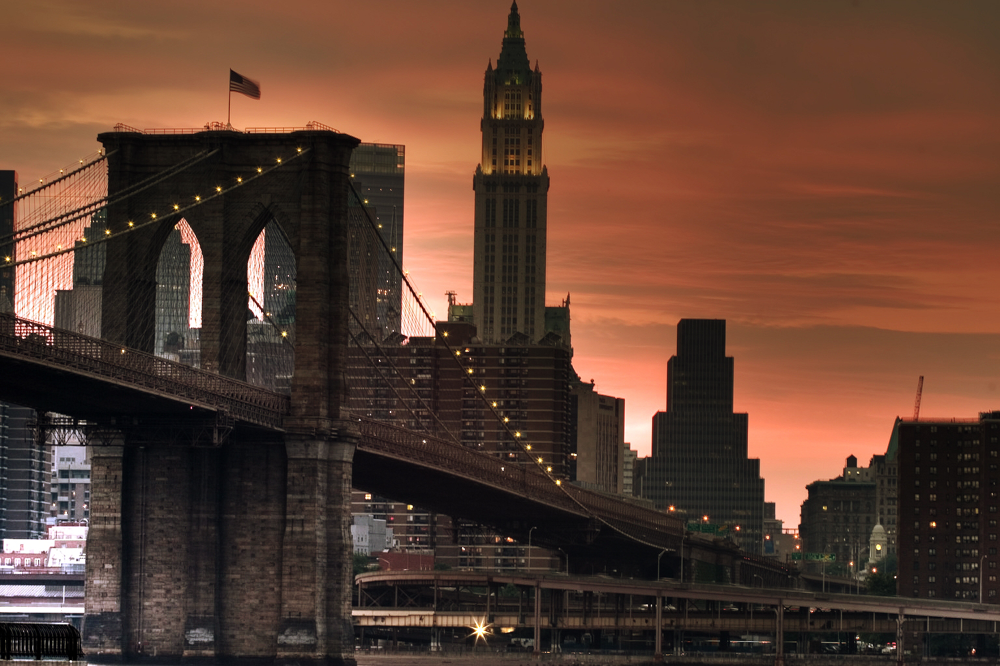

De iconische Brooklyn Bridge uit 1883 verbindt Brooklyn met Manhattan. Het Brooklyn Bridge Park ligt aan de zijde van Brooklyn en is een bezoekje waard dankzij haar levendige pieren. Pier 5 staat garant voor sportiviteit, met voorzieningen voor voetbal, lacrosse, rugby en frisbee. Pier 4 Beach is de ideale plek voor wie met zijn voeten in het zand de skyline van New York wil bewonderen. Daarnaast zijn er wandelpaden die je prachtige uitzichten op Manhattan bieden. Het grootste deel van Brooklyn Bridge Park is dagelijks geopend tussen 06:00 en 01:00, Pier 2 en 5 sluiten al om 21:00.
